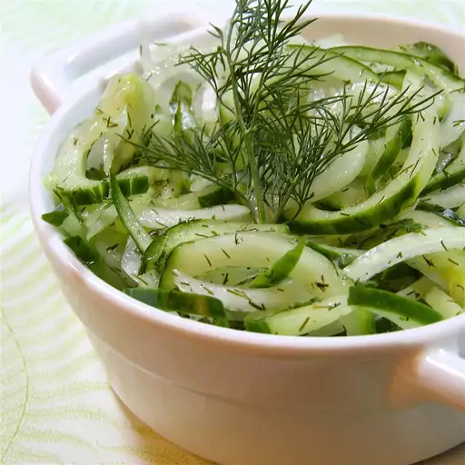

Cucumber Salad

Description
This cucumber salad is refreshing and delicious! A sweet and sour dressing is poured over thinly sliced
cucumbers to ensure the best flavor
Ingredients
- 4 cucumbers
- 1 small white onion
- 1 cup white vinegar
- ¾ cup white sugar
- ½ cup water
- 1 tablespoon dried dill, or to taste
Steps
- Step 1:Toss sliced cucumbers and onion together in a large bowl. Set aside.
- Step 2: Combine vinegar, sugar, and water in a saucepan over medium-high heat; bring to a boil; pour over cucumbers and onions in the bowl. Stir in dill. Cover and let marinate in the refrigerator for at least 1 hour before serving.